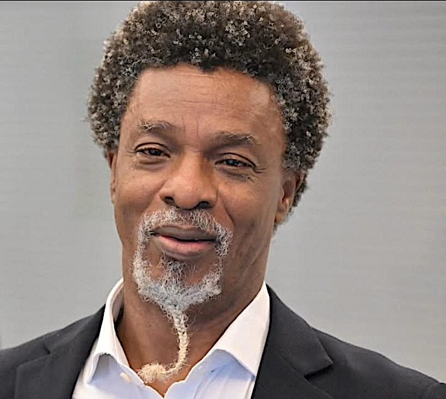

We do not think, yet here we are, By Uddin Ifeanyi

The column argues that Nigerian policymaking often fails to account for the economic trade-offs created by government intervention. Subsidies can ease pressure on consumers but drain public funds and distort how resources are allocated. Higher taxes may raise government revenue, the author says, while reducing consumer spending and business investment and adding pressure to domestic prices. Minimum-wage increases, meanwhile, can raise incomes but may also contribute to inflation when more money chases the same supply of goods.
To illustrate the debate over wages and prices, the author recalls the explanation given by former military ruler Yakubu Gowon for price increases following the Udoji Award: he attributed them to foreign companies raising prices, rather than to the payments themselves. The column counters that increased purchasing power can also add to demand. It argues that later governments, despite tighter public finances, have relied on money created through the central bank to fund spending.
The piece says these outcomes reflect a broader shortage of economic thinking in Nigeria’s approach to development. It places economic ideas within social and cultural values, noting that debates over markets and state support are shaped by views about wealth and its distribution. Keynesian arguments for government intervention, it suggests, offer a possible middle ground between unrestricted markets and extensive state direction.
The author also examines the role of tradition in political thinking. Nigerian leaders, the column contends, have not done enough to distinguish cultural practices worth preserving from those that constrain present-day choices. It argues that useful traditions could provide a foundation for progress, while other elements belong in historical or cultural preservation. The central concern is that leaders who do not reflect on the past or question inherited assumptions are poorly equipped to make sound choices about the country’s future.
Source: Premium Times